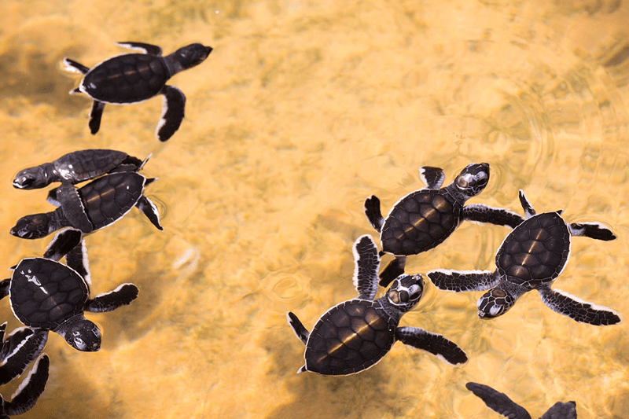
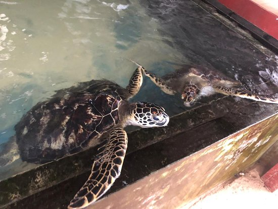
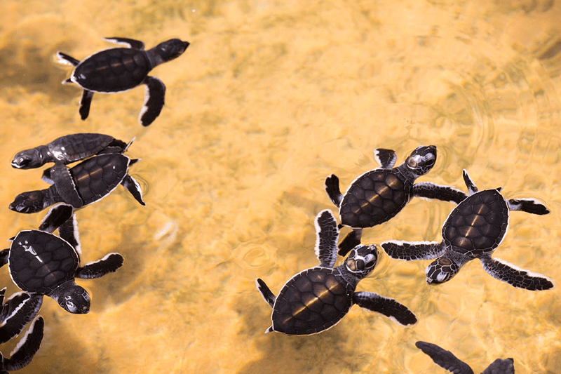
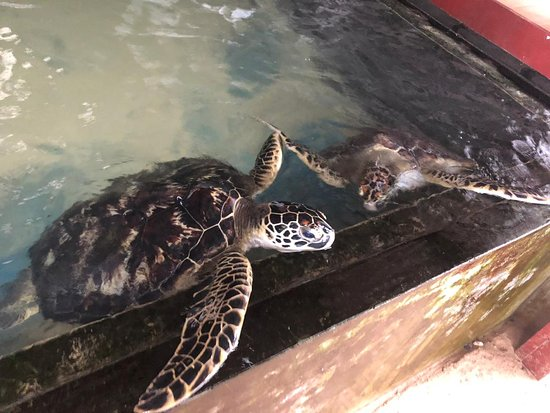
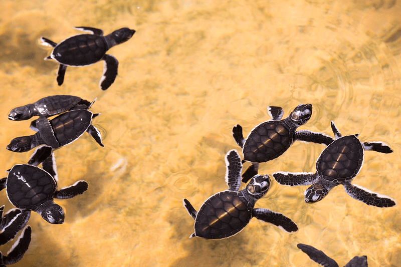
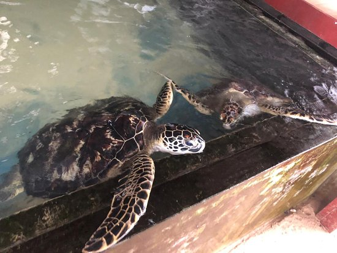

Hikkaduwa


A facility created with the aim to protect and conserve endangered Turtle species living In the world, the hatchery is located in the city of hikkaduwan few kilometres away from the main town,which started as a community project and now has grown into a fully functioning turtle hatchery and rescue centre. people there help protecting nesting grounds in the coastal area and help newly hatched baby turtles to safely reach the sea, besides these things hikkaduwa turtle hatchery helps disabled Turtles to go back to the sea with proper safety. Tourists who visit the hatchery will be able to touch feed adult turtles aswell as the baby turtles. some will get the opportunity to release turtles to the sea and might also be able to see some eggs burried in the sand for hatching.
|
|